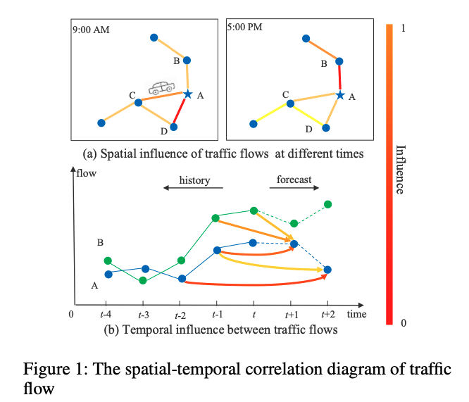

「论文阅读」-Attention Based Spatial Temporal Graph Convolutional Networks for Traffic Flow Forecasting
Abstract
Forecasting the traffic flows is a critical issue for researchers and practitioners in the field of transportation. However, it is very challenging since the traffic flows usually show high nonlinearities and complex patterns. Most existing traffic flow prediction methods, lacking abilities of modeling the dy- namic spatial-temporal correlations of traffic data, thus cannot yield satisfactory prediction results. In this paper, we propose a novel attention based spatial-temporal graph con- volutional network (ASTGCN) model to solve traffic flow forecasting problem. ASTGCN mainly consists of three independent components to respectively model three temporal properties of traffic flows, i.e., recent, daily-periodic and weekly-periodic dependencies. More specifically, each component contains two major parts: 1) the spatial-temporal attention mechanism to effectively capture the dynamic spatial- temporal correlations in traffic data; 2) the spatial-temporal convolution which simultaneously employs graph convolu- tions to capture the spatial patterns and common standard convolutions to describe the temporal features. The output of the three components are weighted fused to generate the final prediction results. Experiments on two real-world datasets from the Caltrans Performance Measurement System (PeMS) demonstrate that the proposed ASTGCN model outperforms the state-of-the-art baselines.
论文概括
研究问题

相邻位置和相邻时间段所作的观测是动态相关的，解决交通预测问题的关键在于有效提取交通数据中动态的时空相关性。
现有方法
-
早期，时间序列分析模型被用于交通流预测。但这类方法在实践中难以处理非平稳和非线性的数据。
-
传统的机器学习方法可建模更加复杂的数据，但难以同时考虑高维度交通数据中的时空相关性，并且这类方法的预测表现严重依赖于特征工程，因此需要大量相关领域内的专家知识。
-
近年来，很多研究者采用深度学习处理高维时空数据，如使用卷积神经网络（CNN）提取格网数据中的空间特征；采用图卷积神经网络（GCN）提取图数据中的空间相关性。然而，这些方法始终未能同时建模时空特征和交通数据中动态的相关性。
方法
ASTGCN
- 最近（recent）
- 日周期（daily-periodic）
- 周周期（weekly-periodic）
每个组件分别包括两个主要部分
- 时空注意力机制：捕捉交通数据中动态的时空相关性。具体而言，空间注意力用于建模不同位置之间的复杂空间相关性；时间注意力机制用于捕捉不同时刻间的动态时序相关性。
- 时空卷积：利用图卷积不被捉空间模式、常用标准卷积学习时序特征
三个组件的输出通过加权融合得到最终的预测结果。
实验结果